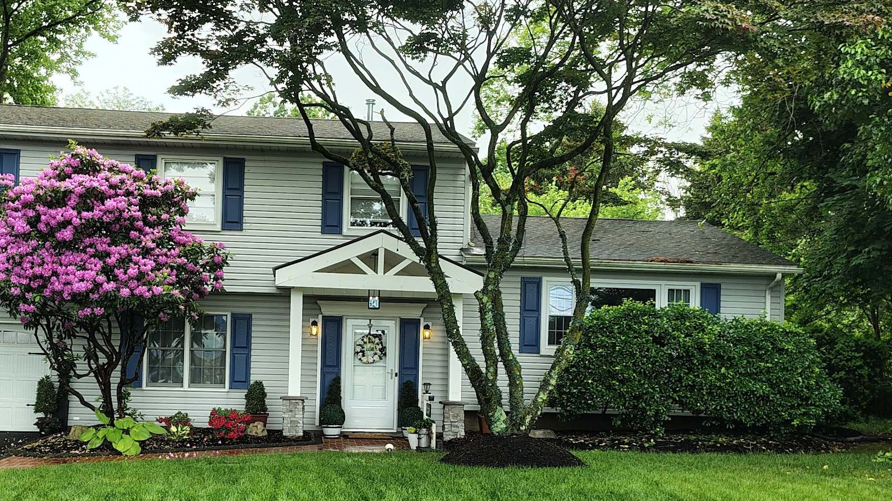
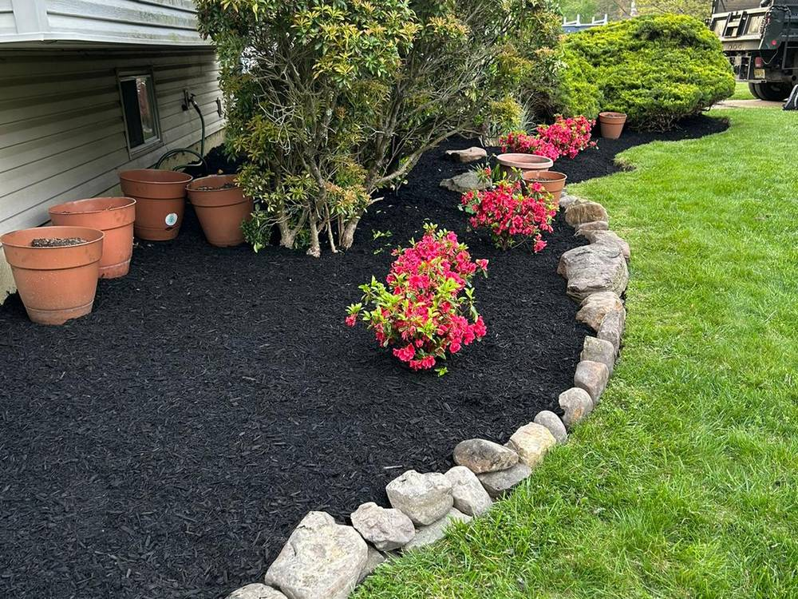
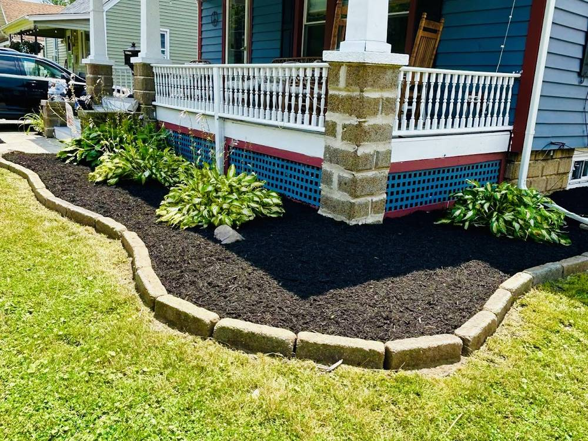
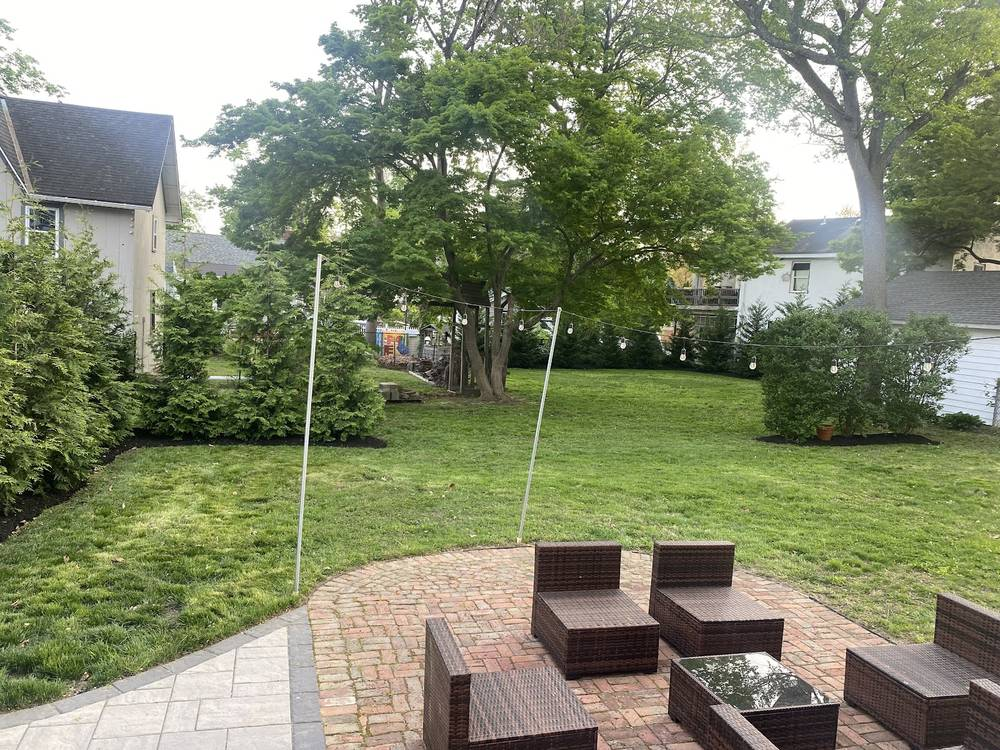
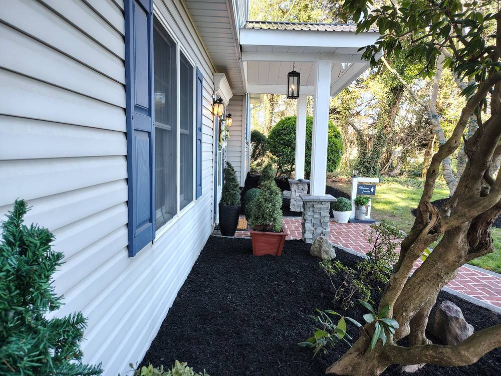
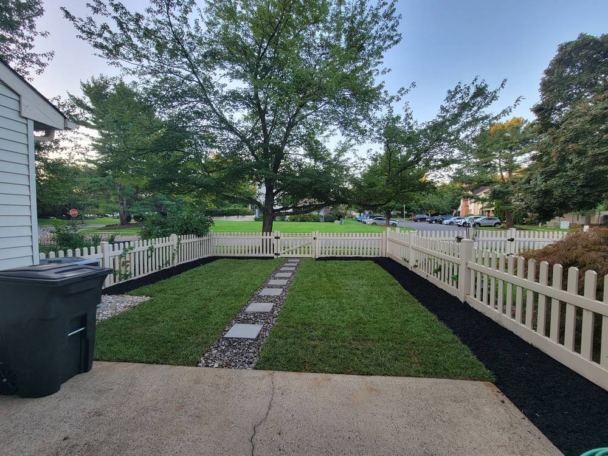
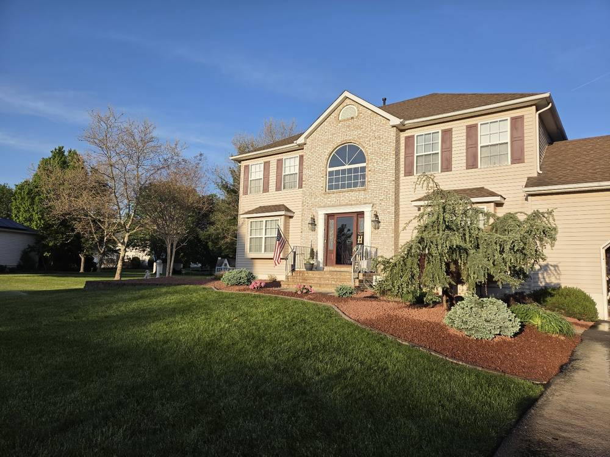

Landscape Design & Build
Planning and building the whole outdoor space — layout, grading, structure and planting — so the yard works and lasts.

V&C designs and builds the structural work — retaining walls, paver patios, walkways and beds — and keeps the lawn sharp after. One crew for the whole property.
Real V&C projects around Hightstown — the retaining walls, patios, walkways and beds that change how a whole property reads from the street.






V&C is a design-build crew first — the walls, patios and grading — and a maintenance crew after. The full range, all honest work we do here in Mercer County.
Planning and building the whole outdoor space — layout, grading, structure and planting — so the yard works and lasts.
Block and natural-stone walls and bed borders that hold a slope, define a space and stand up to the seasons.
Paver and stone patios, front walks and driveways laid on a proper base — the hardscape that anchors the yard.
Fresh mulch, clean bed edges, shrubs and plantings that frame the house and lift the curb appeal.
Mowing, edging and seasonal cleanups that keep the lawn thick and the property looking cared for all year.
Seasonal driveway and lot plowing through the New Jersey winter, from the crew that already knows your property.
Marco's people can do anything! They not only did a fabulous job on my lawn, but they also repaired my deck expertly after I fell through the old rotten, wooden boards.Cil PurnickGoogle review
V&C Lawn & Landscaping is a Hightstown-based crew that does the range most companies split up — the design-build hardscaping and the season-to-season lawn care both from the same people.
With a 4.8 rating across 95 Google reviews, V&C has earned a steady book of Mercer County homeowners who call back for the next project and send their neighbors. When you hire V&C, the crew that builds the wall is the crew that keeps the yard after.
Based on Voelbel Rd in Hightstown, V&C works across the East Windsor area and the surrounding central-New-Jersey towns.
Call or email V&C and we'll come walk the project with you. No pressure, and the estimate is free.
V&C Lawn and Landscaping · 118 Voelbel Rd, Hightstown, NJ 08520 · Call for current hours